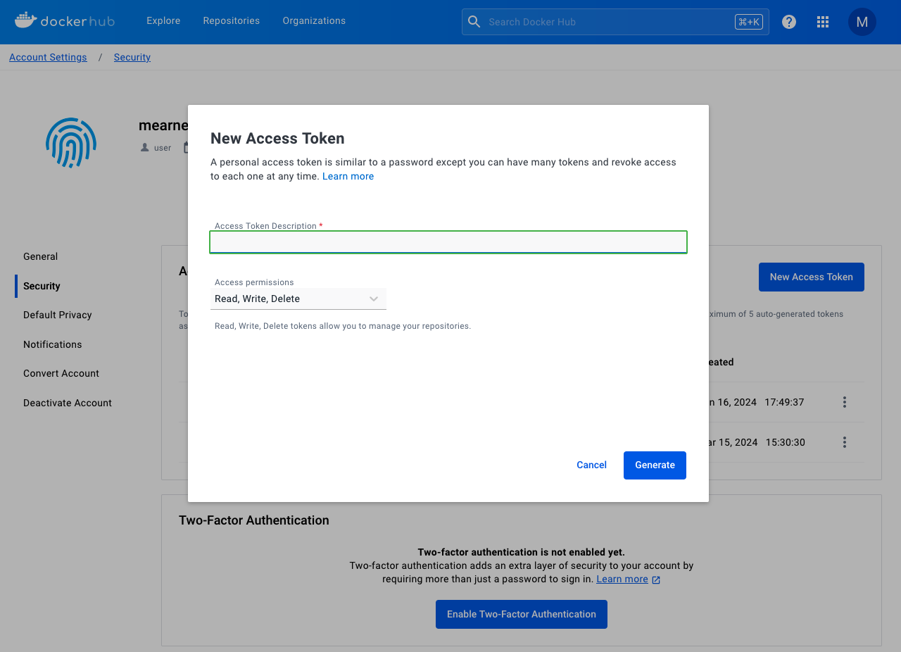
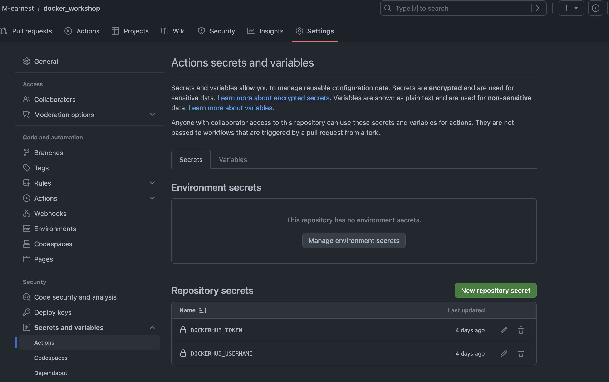
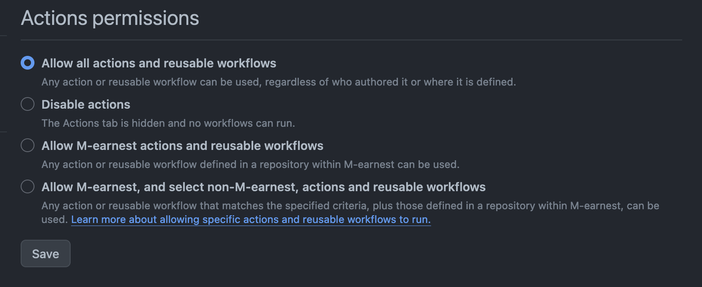
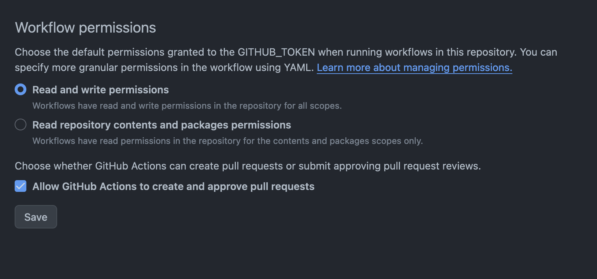
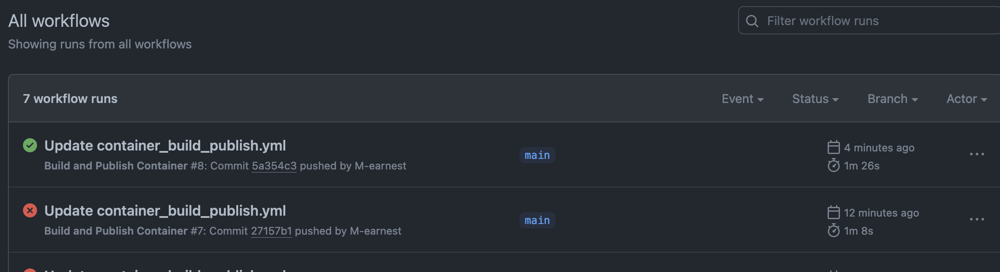
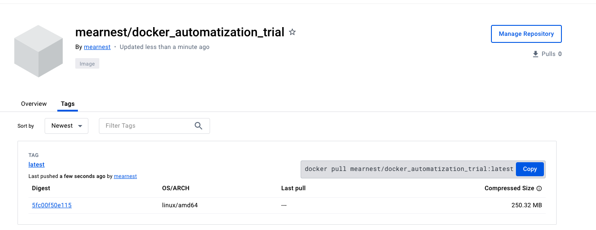

Automating software containers#
If you have an project that is in development or you created a programm that will be maintained for the forseeable future, it can beconme tedious to constantly re-build your Docker Containers locally. Fortunately, there is a way to automate this process using GitHub, more specifically GitHub Workflows. The following is going to discuss how to setup a project repository, how to add the relevant workflow and how to update your container with a simple push.
This will not only make your life easier, but integrate Docker in reproducible, in terms of version-controlled, scientific practice. The actual goal of this workshop, no?
Automating builds using Github#
GitHub workflows allow Users to define processes that automatically run when certain actions (push, pull, commits etc.) are performed on a repository. This has many application such as automatically building apps or e.g. creating and updating this website. We will make use of GitHub workflows to automatically generate and update Docker images and push them to DockerHub. A GitHub workflow is specified in a YAML file (.yml), like the one you’ll find under point 4., which will have to be included in the .github/workflows directory in a repository.
Find more info on GitHub workflows in the official documentation.
1. Setup#
The setup is simple and straightforward, as we just need to create a new GitHub repository in which we store our Dockerfiles plus all of the files necessary to build your docker image, i.e. we recreate the local build context in a GitHub repository:
create a new Github repository called docker_workshop (or substitute your project name)
add your Dockerfile and all the neceessary files to build your image to this repository (alternatively download the contents from our examples folder and upload the files to your repository)
So far, so simple, but to automate the build process we’ll need to add a few things to our repository!
2. Generate a DockerHub access token#
Next, we need a Docker access token, this is necessary so that the GitHub workflow can push data to our DockerHub registry.
head to DockerHub
create a repository with a name matching your GitHub repository
click on your profile in the top right and select
my accountunder
securityclickcreate new access tokenthe name of the access token should ideally also match the name of your Github repository (best practice, not a requirement)
grant read, write and delete permissions and click on generate
a new dialogue box will pop-up, copy the displayed access token and temporally save it somewhere, as you will not be able to view this token again later

3. Setup GitHub secrets#
For authentification purposes, i.e. to connect our DockerHub and GitHub, we will need to store our newly generated access token, as well as our DockerHub username using GitHub Secrets. These allow us to store sensitive information (API keys, passwords etc.) necessary to enable automatization without exposing that information to the public.
head to your GitHub repository
click on
settings->secrets and variables->actionsnext, we will create two new GitHub “secrets”
click on
new repository secretand enter the nameDOCKERHUB_USERNAMEunder the
secretheading add your DockerHub Username
click on
new repository secretand enter the nameDOCKERHUB_TOKENunder the
secretheading add theDockerHub access tokenfrom the previous step

4. Setup the Github workflow#
Now it’s time to create our GitHub workflow file. For this we will create a .yml file that contains all the necessary instructions to build our image and to transfer it to our DockerHub registry.
go to your GitHub repo, create a new file called
.github/workflows/container_build_publish.ymlcopy and paste the following code into the file
make sure to replace the line under tags
yourhubusername/yourimagename:latestwith your data
name: Build and Publish Container
on:
# run it on push to the default repository branch
push:
branches: [main]
# run it during pull request
pull_request:
jobs:
# define job to build and publish docker image
build-and-push-docker-image:
name: Build Docker image and push to repositories
# run only when code is compiling and tests are passing
runs-on: ubuntu-latest
# steps to perform in job
steps:
- name: Checkout code
uses: actions/checkout@v3
# setup Docker build action
- name: Set up Docker Buildx
id: buildx
uses: docker/setup-buildx-action@v2
- name: Login to DockerHub
uses: docker/login-action@v2
with:
username: ${{ secrets.DOCKERHUB_USERNAME }}
password: ${{ secrets.DOCKERHUB_TOKEN }}
- name: Login to Github Packages
uses: docker/login-action@v2
with:
username: ${{ github.actor }}
password: ${{ secrets.GITHUB_TOKEN }}
- name: Build image and push to Docker Hub and GitHub Container Registry
uses: docker/build-push-action@v2
with:
# relative path to the place where source code with Dockerfile is located
context: ./
# Note: tags has to be all lower-case
tags: |
`yourhubusername/yourimagename:latest`
# build on feature branches, push only on main branch
push: ${{ github.ref == 'refs/heads/main' }}
- name: Image digest
run: echo ${{ steps.docker_build.outputs.digest }}
5. Check your GitHub action settings#
Now we make sure that the settings of our GitHub repository allow for our workflows to read/write and push files to our DockerHub.
in your GitHub repo, click
settings->actions->generalmake sure that
under
Action permissionsyou’ve selectedAllow all actions and reusable workflows

under
Workflow permissionsyou’ve selectedRead and write permissionsandAllow GitHub Actions to create and approve pull requests

6. Start the actions workflow#
Every consecutive push or commit to the main branch of this GitHub repository will now trigger a new build, hence your Docker container remains nicely up to date without any additional effort.
to test if your workflow works we therefore can simply commit or push a change, i.e.
update a file online, e.g. you could add or update the
READMEfile of your repopush a change from your local machine to your online repo
Following go to the
actionssection of your GitHub repositoryunder workflow runs you should see either the current workflow still running or see the previous runs
a green checkmark indicates that your workflow has run successfully, a red cross that the workflow failed
in either case you can click on the workflow in question to get more info (e.g. to check what went wrong)

If you check back on DockerHub, you should now see your updated Docker image

7. Celebrate#